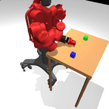
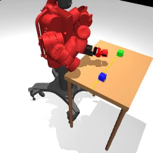
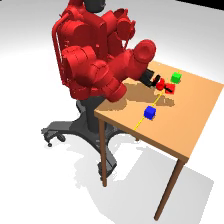
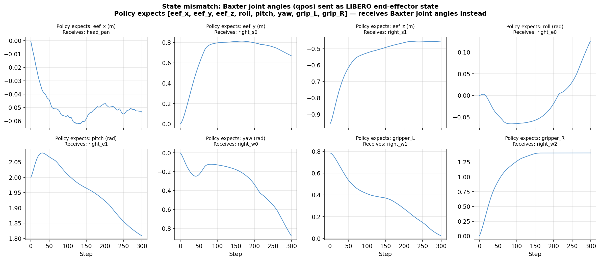
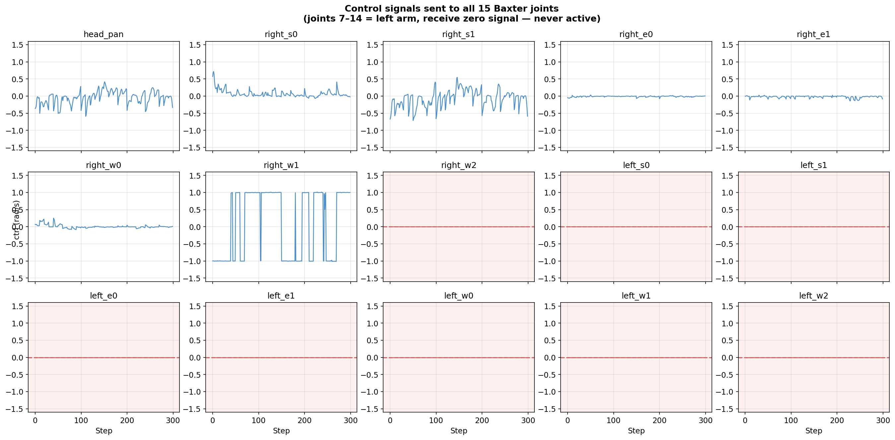

Execution Sequence
Successful pick-and-place trial — pos_v3, Task T0 (red block → far side). 9 out of 10 trials succeeded for this task. Final block position: x = 0.758 m (threshold: x > 0.70 m).






Diagnostic plots — policy internals



